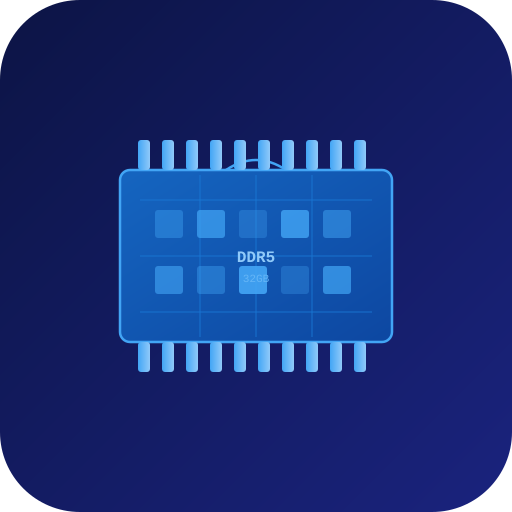
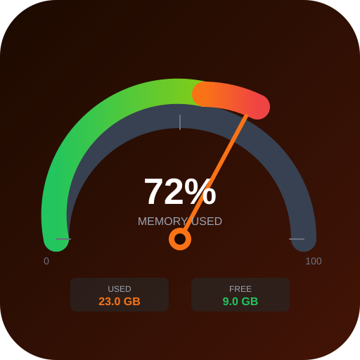
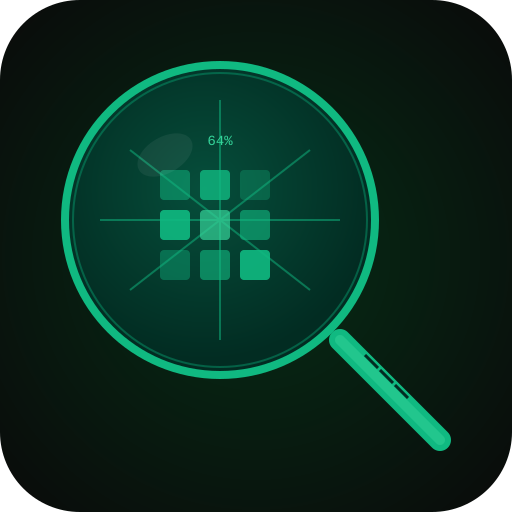
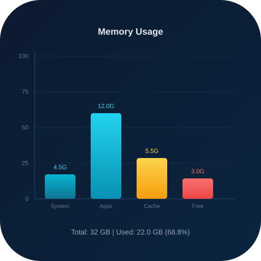
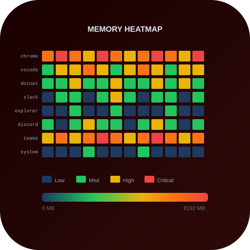
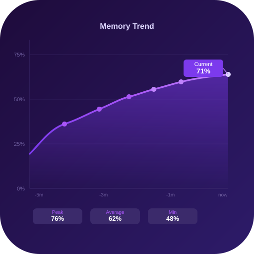
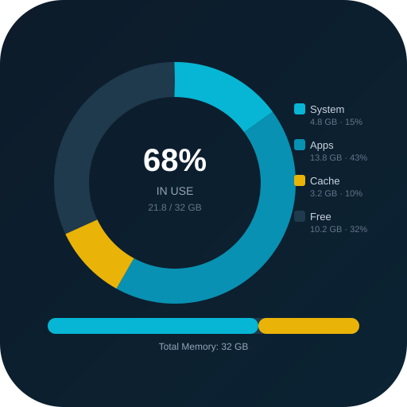
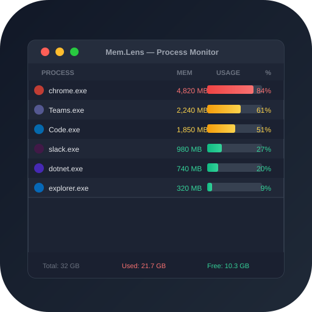
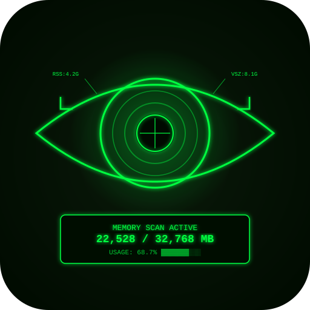
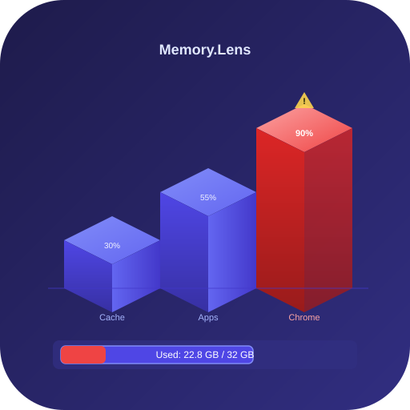

메모리 사용량 분석 도구 | 10개 아이콘 후보

01 · memory_chip_blue
02 · gauge_meter_orange
03 · magnifier_circuit_green
04 · bar_chart_cyan
05 · heatmap_red
06 · wave_graph_purple
07 · donut_chart_teal
08 · process_list_dark
09 · eye_scan_neon
10 · blocks_3d_indigo